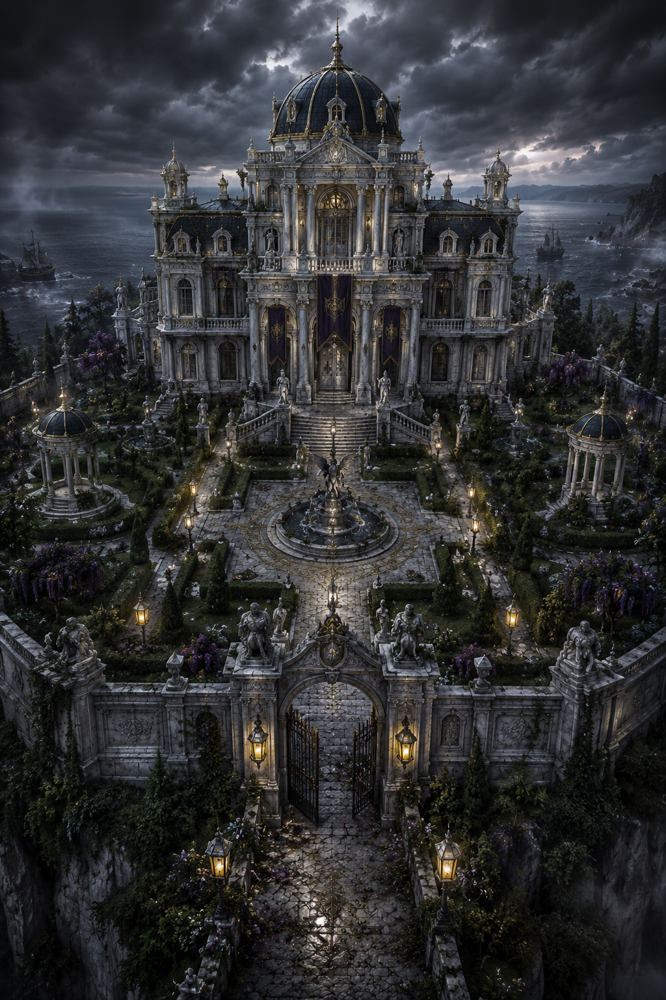
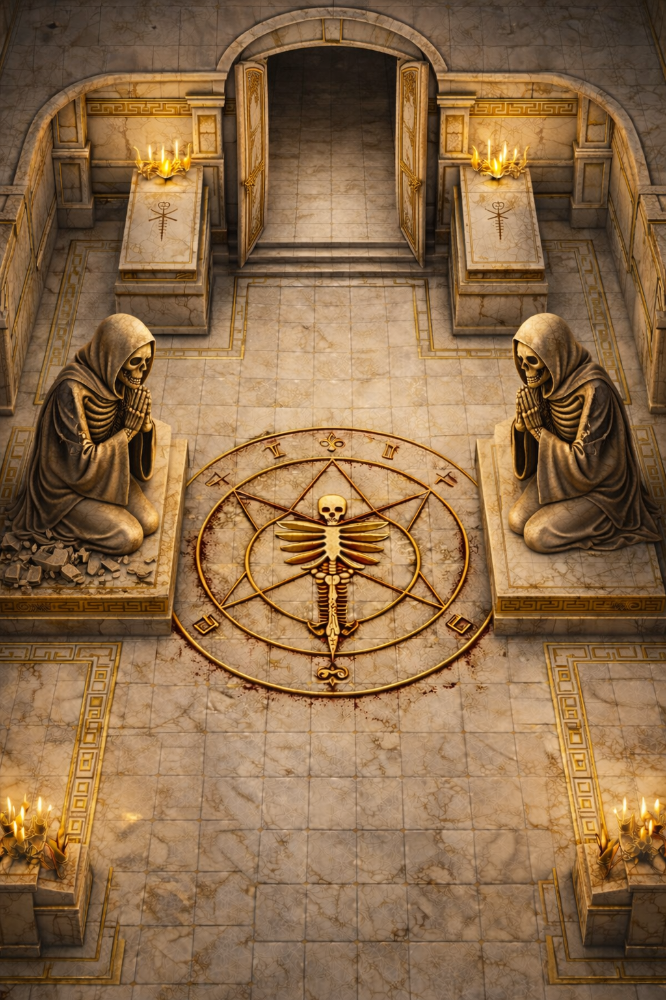
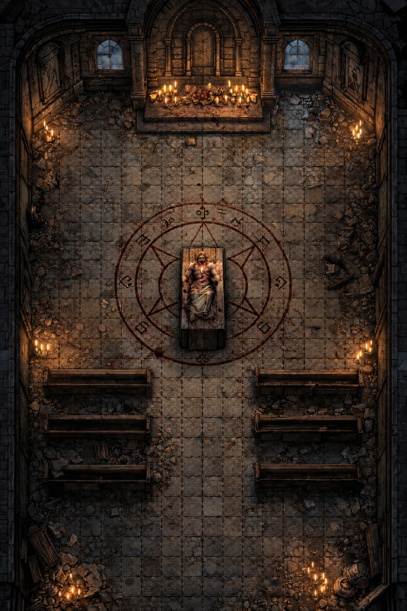

Una grande magione marmorea affacciata sul mare, circondata da un giardino vasto e innaturalmente perfetto.
Statue, sentieri bianchi e alberi provenienti da terre lontane testimoniano l’enorme ricchezza accumulata dalla famiglia Thorm attraverso il commercio navale.
Qui si è tenuta la veglia funebre di Varek Thorm. O almeno… così sembrava.
Durante quella notte il Libro Mastro venne trafugato, il caos travolse la villa, Abraxas incendiò il falso cadavere di Varek con una bottiglia incendiaria e Lyria Thorm rimase gravemente ustionata.
Quando la ragazza riapparve giorni dopo, parte del suo volto e del suo corpo erano stati sostituiti da sottili venature e placche dorate, come se l’oro fosse cresciuto sopra la carne distrutta.

Mausoleo dei Thorm
Situato nel vecchio cimitero del villaggio, il Mausoleo dei Thorm è molto più antico della famiglia stessa.
L’ingresso conduce a cripte in marmo nero e bianco ornate da incisioni dorate ormai annerite dal tempo.
Nel cuore del complesso si trova la sala delle statue gemelle: una figura umana inginocchiata e uno scheletro nella stessa posa.
Le mani delle statue restavano leggermente aperte, come in attesa.
I personaggi riuscirono a risolvere l’enigma delle pietre nere e del rituale incompleto, comprendendo che il mausoleo non celebrava la morte… ma la trasformazione.

Cappella Abbandonata
Poco fuori dal villaggio, oltre i campi e le scogliere, sorge una cappella dimenticata che nessuno utilizza più da anni.
L’interno era stato trasformato in un luogo rituale. I personaggi vi trovarono il cadavere mutilato del fioraio del villaggio, simboli rituali incisi nella pietra, tracce di esperimenti necromantici e i primi segni concreti dell’opera di Thorm.
Porto di Valkren
Un porto piccolo ma molto attivo, costruito attorno al commercio marittimo controllato dai Thorm.
Tra le strutture principali si trovano magazzini mercantili, banchine da carico, reti da pesca, gru arrugginite ed edifici abitativi per marinai e lavoratori.
Casa di Arolf Thelir
Una dimora isolata piena di strumenti medici, disegni anatomici e odore di reagenti.
Casa di Ralph
Più simile a uno studio clandestino che a una vera abitazione. Bende sporche, strumenti metallici e testi proibiti occupano quasi ogni superficie.
La Taverna
Piccola, rumorosa e sempre piena di marinai.
L’Alchimista
Una minuscola bottega di reagenti e veleni.
La notte prima della partenza verso Portogrigio, Abraxas decapitò l’alchimista all’interno del suo stesso negozio, lasciando il villaggio in uno stato di silenziosa tensione.